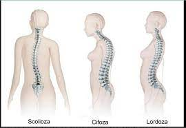
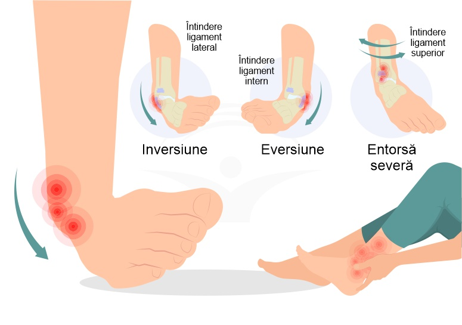
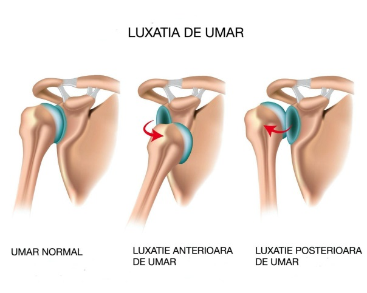

| Noțiuni elementare de igienă și patologie |
Deformări osoase |
|
Deformările osoase sunt cauzate de:
o încălțăminte strâmtă
o statul îndelungat în picioare
o poziții vicioase
o boli infecțioase
o lipsa sau turtirea discurilor intervertebrale.
Deformările osoase se pot manifesta prin:
a. cifoză – accentuarea convexității toracale a coloanei vertebrale
b. scolioză – devierea laterală a coloanei vertebrale
c. lordoză – accentuarea concavității lombare a coloanei vertebrale
|
|

|
| Fracturi |
Fracturile sunt cauzate de ruperea totală sau parțială a unui os, în urma unui traumatism.
Fracturile se pot manifesta prin:
o durere vie, persistentă, accentuată la mișcare
o deformarea regiunii
o echimoze (vânătăi)

|
| Entorse |
Entorsele sunt cauzate de traumatisme în urma cărora ligamentele se întind, răsucesc forțat, fără ca oasele să iasă din articulații.
Entorsele se pot manifesta prin:
• dureri vii
• umflarea încheieturii
• mișcările sunt dificil sau chiar imposibil de realizat
|

| Luxații |
Luxațiile sunt cauzate de traumatisme în urma cărora suprafețele articulare ale oaselor se deplasează din articulație, ligamentele se întind puternic sau chiar se rup.
Luxațiile se manifestă prin:
umflarea articulației
durere
aspect anormal

|